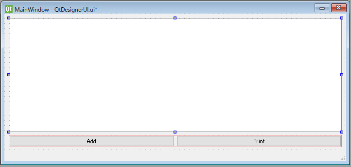
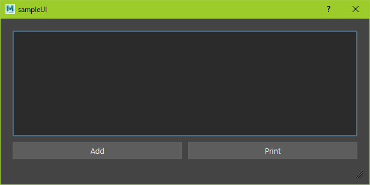

.ui と、.ui をコンバートした .py 。
① xxx.ui ファイルを使用した、
と、
② コンバートした、 xxx_pyside2.py ファイルを使用した、
には、記述に違いがある。
例えば、① ② QtDesignerUI.ui QtDesignerUI_pyside2.py
以下、シンプルですが、QtDesignerUI.ui
QtDesignerUI.ui 
<?xml version="1.0" encoding="UTF-8"?>
< ui version = "4.0" >
< class > MainWindow</ class >
< widget class = "QMainWindow" name = "MainWindow" >
< property name = "geometry" >
< rect >
< x > 0</ x >
< y > 0</ y >
< width > 942</ width >
< height > 362</ height >
</ rect >
</ property >
< property name = "windowTitle" >
< string > MainWindow</ string >
</ property >
< widget class = "QWidget" name = "centralwidget" >
< layout class = "QVBoxLayout" name = "verticalLayout" >
< item >
< widget class = "QListWidget" name = "listWidget" />
</ item >
< item >
< layout class = "QHBoxLayout" name = "horizontalLayout" >
< item >
< widget class = "QPushButton" name = "pushButton" >
< property name = "text" >
< string > Add</ string >
</ property >
</ widget >
</ item >
< item >
< widget class = "QPushButton" name = "pushButton_2" >
< property name = "text" >
< string > Print</ string >
</ property >
</ widget >
</ item >
</ layout >
</ item >
</ layout >
</ widget >
< widget class = "QStatusBar" name = "statusbar" />
</ widget >
< resources />
< connections />
</ ui >
また、コンバート用のバッチファイルを用いて、QtDesignerUI.ui QtDesignerUI_pyside2.py 参考: @rateionn 天埜零士@低音 さんサイト
コンバート用のバッチファイルは以下のようにしています。
ui2py_maya.bat cd / d C : \ Program Files \ Autodesk \ Maya2016 \ bin
for %% f in ( %* ) do (
mayapy pyside - uic - o %~ dpn1_pyside . py %% f
)
cd / d C : \ Program Files \ Autodesk \ Maya2018 \ bin
for %% f in ( %* ) do (
mayapy pyside2 - uic - o %~ dpn1_pyside2 . py %% f
)
ここでは、C:\Program Files\Autodesk\Maya2018\bin
QtDesignerUI.ui を、ui2py_maya.bat QtDesignerUI.ui と同階層へ、QtDesignerUI_pyside2.py が作成されます。
QtDesignerUI_pyside2.py # -*- coding: utf-8 -*-
# Form implementation generated from reading ui file 'C:\Users\██\sample_UI\QtDesignerUI.ui'
#
# Created: Thu Sep 24 13:43:29 2020
# by: pyside2-uic running on PySide2 2.0.0~alpha0
#
# WARNING! All changes made in this file will be lost!
from PySide2 import QtCore , QtGui , QtWidgets
class Ui_MainWindow ( object ):
def setupUi ( self , MainWindow ):
MainWindow . setObjectName ( "MainWindow" )
MainWindow . resize ( 942 , 362 )
self . centralwidget = QtWidgets . QWidget ( MainWindow )
self . centralwidget . setObjectName ( "centralwidget" )
self . verticalLayout = QtWidgets . QVBoxLayout ( self . centralwidget )
self . verticalLayout . setObjectName ( "verticalLayout" )
self . listWidget = QtWidgets . QListWidget ( self . centralwidget )
self . listWidget . setObjectName ( "listWidget" )
self . verticalLayout . addWidget ( self . listWidget )
self . horizontalLayout = QtWidgets . QHBoxLayout ()
self . horizontalLayout . setObjectName ( "horizontalLayout" )
self . pushButton = QtWidgets . QPushButton ( self . centralwidget )
self . pushButton . setObjectName ( "pushButton" )
self . horizontalLayout . addWidget ( self . pushButton )
self . pushButton_2 = QtWidgets . QPushButton ( self . centralwidget )
self . pushButton_2 . setObjectName ( "pushButton_2" )
self . horizontalLayout . addWidget ( self . pushButton_2 )
self . verticalLayout . addLayout ( self . horizontalLayout )
MainWindow . setCentralWidget ( self . centralwidget )
self . statusbar = QtWidgets . QStatusBar ( MainWindow )
self . statusbar . setObjectName ( "statusbar" )
MainWindow . setStatusBar ( self . statusbar )
self . retranslateUi ( MainWindow )
QtCore . QMetaObject . connectSlotsByName ( MainWindow )
def retranslateUi ( self , MainWindow ):
MainWindow . setWindowTitle (
QtWidgets . QApplication . translate ( "MainWindow" , "MainWindow" , None , - 1 ))
self . pushButton . setText (
QtWidgets . QApplication . translate ( "MainWindow" , "Add" , None , - 1 ))
self . pushButton_2 . setText (
QtWidgets . QApplication . translate ( "MainWindow" , "Print" , None , - 1 ))
以上を前提として、以下のように場合分け出来た。
■① XXX.ui ファイルを使用した 場合 pyTemplate_forQtDesignerUiUse_boot.py # -*- coding: utf-8 -*-
u """
pyTemplate_forQtDesignerUiUse_boot.py
概要(overview):
Qtデザイナー .ui を使用し、起動する .py template です。
基本構造です。
使用法(usage):
import pyTemplate_forQtDesignerUiUse_boot
reload(pyTemplate_forQtDesignerUiUse_boot)
pyTemplate_forQtDesignerUiUse_boot.main()
"""
# ------------------------------------------------------------------------------
# Qt.pyを導入している場合
"""from Qt.QtWidgets import *
from Qt.QtGui import *
from Qt.QtCore import *
"""
# Qt.pyを導入していない場合
try :
from PySide2 import QtWidgets , QtCore , QtGui
from PySide2.QtUiTools import QUiLoader
except :
from PySide import QtCore , QtGui
# ------------------------------------------------------------------------------
# parent UI 実現の準備
# shibokenの読み込み
try :
import shiboken2 as shiboken
except :
import shiboken
# ------------------------------------------------------------------------------
# OpenMayaUIの読み込み 人によっては as omUI と書く場合も
import maya.OpenMayaUI as OpenMayaUI
# ------------------------------------------------------------------------------
# 同階層にある ui ファイルを読み込む為の準備
# 実行中のファイルのファイル名、ディレクトリ名を取得
import os.path
# print(u'ファイル名: ', os.path.basename(__file__))
# print(u'ディレクトリ名: ', os.path.dirname(__file__))
# CURRENT_PATH = os.path.dirname(__file__)
# print(CURRENT_PATH)
print ( '###' * 10 )
try :
# loaded as module file
print ( 'try: \n\t ' + __file__ )
CURRENT_PATH = os . path . dirname ( __file__ )
except :
# loaded as script file
import inspect
src_file_path = inspect . getfile ( lambda : None )
print ( 'except: \n\t ' + src_file_path )
CURRENT_PATH = os . path . dirname ( src_file_path )
print ( 'CURRENT_PATH: ' + CURRENT_PATH )
print ( '###' * 10 )
# -------------------------------------------------------------------------------------------
# Widgetを配置するためのWindow
class GUI ( QtWidgets . QMainWindow ):
# parent UI
ptr = OpenMayaUI . MQtUtil . mainWindow ()
parent = shiboken . wrapInstance ( long ( ptr ), QtWidgets . QWidget )
# setting title
titleName = "sampleUI"
def __init__ ( self , parent = None ):
# parent UI
super ( GUI , self ) . __init__ ( self . parent )
self . ui = QUiLoader () . load ( os . path . join ( CURRENT_PATH , 'QtDesignerUI.ui' ))
self . setCentralWidget ( self . ui )
# layout = QtWidgets.QVBoxLayout()
# layout.addWidget(self.ui)
# self.setLayout(layout)
self . setWindowTitle ( self . titleName )
# single UI を含む
def main (): # sampleWindow の部分はツールごとに変更のこと!!
# single UI
global sampleWindow
try :
sampleWindow . close ()
except :
pass
app = QtWidgets . QApplication . instance ()
sampleWindow = GUI ()
sampleWindow . show ()
app . exec_ ()
if __name__ == '__main__' :
print ( u ' {} .py: loaded as script file' . format ( __name__ ))
main ()
else :
print ( u ' {} .py: loaded as module file' . format ( __name__ ))
print ( u 'モジュール名： {} ' . format ( __name__ )) # 実行したモジュール名を表示する
実行文
import pyTemplate_forQtDesignerUiUse_boot
reload ( pyTemplate_forQtDesignerUiUse_boot )
pyTemplate_forQtDesignerUiUse_boot . main ()
■② XXX.ui ファイルをコンバートした pyTemplate_forQtDesignerUiConvertedPyUse_boot.py # -*- coding: utf-8 -*-
u """
pyTemplate_forQtDesignerUiConvertedPyUse_boot.py
概要(overview):
Qtデザイナー.ui からコンバートした .py を使用し、起動する .py template です。
基本構造です。
使用法(usage):
import pyTemplate_forQtDesignerUiConvertedPyUse_boot
reload(pyTemplate_forQtDesignerUiConvertedPyUse_boot)
pyTemplate_forQtDesignerUiConvertedPyUse_boot.main()
"""
# ------------------------------------------------------------------------------
# Qt.pyを導入している場合
"""from Qt.QtWidgets import *
from Qt.QtGui import *
from Qt.QtCore import *
"""
# Qt.pyを導入していない場合
try :
from PySide2 import QtWidgets , QtCore , QtGui
except :
from PySide import QtCore , QtGui
# ------------------------------------------------------------------------------
# parent UI 実現の準備
# shibokenの読み込み
try :
import shiboken2 as shiboken
except :
import shiboken
# ------------------------------------------------------------------------------
# OpenMayaUIの読み込み 人によっては as omUI と書く場合も
import maya.OpenMayaUI as OpenMayaUI
# ------------------------------------------------------------------------------
# .py GUI の(モジュールとして)読み込み。
# 同階層に .uiからコンバートした .py を配置し、読み込む事を想定。
# QtDesignerUI.ui --> QtDesignerUI_pyside2.py
# C:\Users\██\sample_UI\QtDesignerUI_pyside2.py
try :
import QtDesignerUI_pyside2 as qtGUI
reload ( qtGUI )
except :
import QtDesignerUI_pyside as qtGUI
reload ( qtGUI )
# -------------------------------------------------------------------------------------------
# Widgetを配置するためのWindow
class GUI ( QtWidgets . QMainWindow ):
# parent UI
ptr = OpenMayaUI . MQtUtil . mainWindow ()
parent = shiboken . wrapInstance ( long ( ptr ), QtWidgets . QWidget )
# setting title
titleName = "sampleUI"
def __init__ ( self , parent = None ):
# parent UI
super ( GUI , self ) . __init__ ( self . parent )
self . ui = qtGUI . Ui_MainWindow ()
self . ui . setupUi ( self )
self . setWindowTitle ( self . titleName )
# single UI を含む
def main (): # sampleWindow の部分はツールごとに変更のこと!!
# single UI
global sampleWindow
try :
sampleWindow . close ()
except :
pass
app = QtWidgets . QApplication . instance ()
sampleWindow = GUI ()
sampleWindow . show ()
app . exec_ ()
if __name__ == '__main__' :
print ( u ' {} .py: loaded as script file' . format ( __name__ ))
main ()
else :
print ( u ' {} .py: loaded as module file' . format ( __name__ ))
print ( u 'モジュール名： {} ' . format ( __name__ )) # 実行したモジュール名を表示する
実行文
import pyTemplate_forQtDesignerUiConvertedPyUse_boot
reload ( pyTemplate_forQtDesignerUiConvertedPyUse_boot )
pyTemplate_forQtDesignerUiConvertedPyUse_boot . main ()
いずれにしても、以下のUIがmayaで開くようになります。

以上
scroll_button arrow_upward ▲このページTopへ戻る▲
最終更新日: 2020年10月2日
{kind=link}
{kind=link}